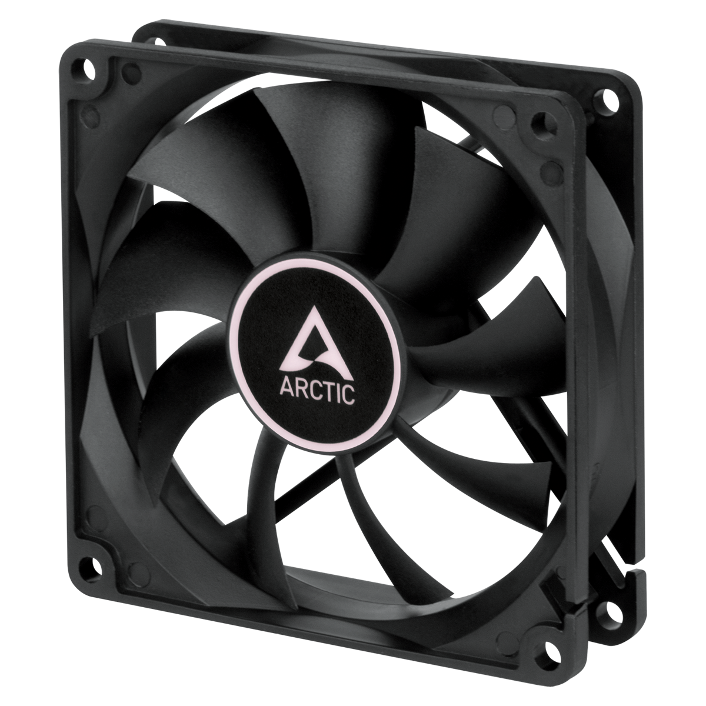
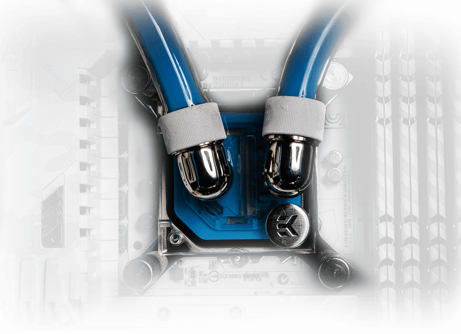
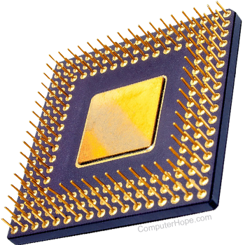
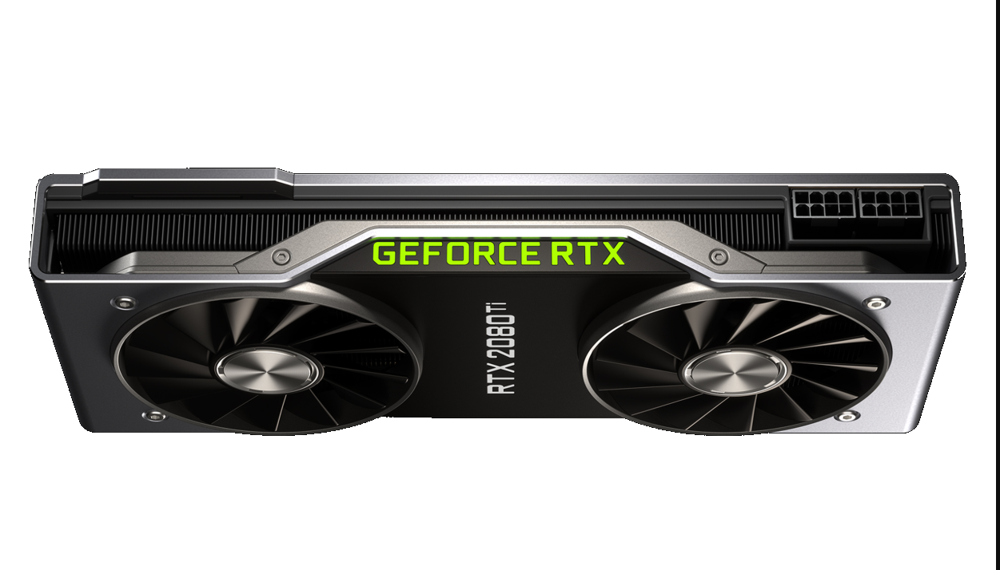

Best Parts for your PC
Cooling
There are mainly 2 different types of cooling for your PC. There is air cooling, which just consists of fans and air vents, and there is liquid cooling, which uses water based solutions to cool your
components. The liquids go through tubes which are placed all around the PC case. The choice between air cooling and liquid cooling depends on what you use your PC for. If you are a gamer and streamer
and your PC needs to be cool at all times to play and stream smoothly, liquid cooling is better as it touches almost every single component and is more precise. However, if you use your PC for work
purposes only, air cooling is sufficient.
More Information


CPU
CPUs reside in almost all devices you own. There are many companies making CPUs at different efficiency. Just like the cooling, your choice of CPUs depend on how you use your PC. If you need a very
strong core, a CPU with 8 cores should be good enough. It has the capability to run many applications at one efficiently without lagging too much. If you do not use your PC for extreme reasons, a 4 core
CPU should do the job. It can run a number of applications without slowing down your PC

More Information
GPU
The graphics processing unit, or GPU, has become one of the most important types of computing technology, both for personal and business computing. Like the name, it is mostly used for the graphics
part. There are many versions of GPUs. An example is NVIDEA's GTX and RTX series. The GTX is a bit less advanced than the RTX series as it has more limitations. GTX does not have the capability
to render rays coming from different light sources. It is not as powerful as the RTX GPUs. However, if you need a strong and robust PC, the, any RTX GPU should be more than sufficent.

More Information